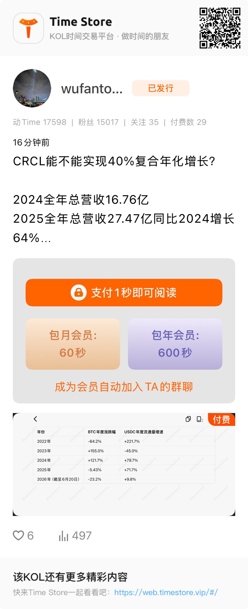
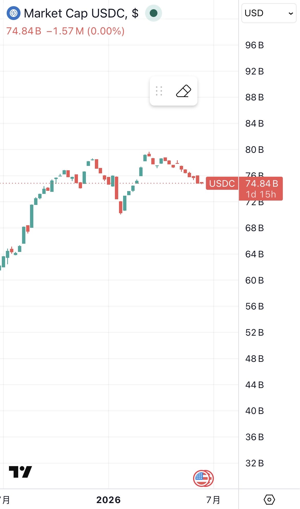

#1 · wufantouzi · 2026-06-20T07:56:44.000Z从2025年开始usdc已经不完全受币圈影响在币圈暴跌了50%的情况下usdc增发水平维持住不跌这就是逆水行舟但还在前进已经是龙头中的龙头等到水流方向改变日行千里https://web.tsdaq.com/#/time/pages/timeDetail/index?timeid=155882…https://web.tsdaq.com/#/time/pages/timeDetail/index?timeid=155882…
#12 · Kevin90813 · 2026-06-20T09:48:29.000ZMarketcap of USDC stays flat since 2025 Q4, coincides with Crypto’s bear market. If you think about it, there’s no incentive to hold USDC without investing in crypto.